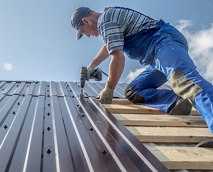
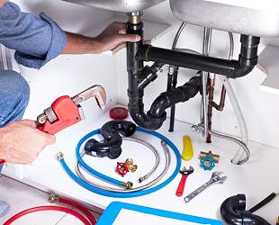
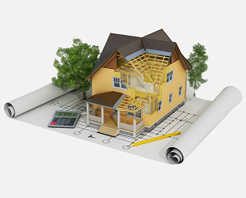
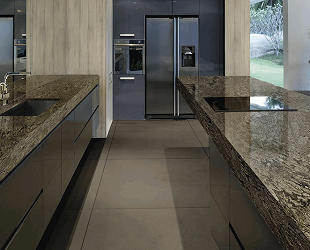
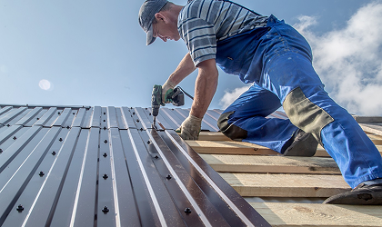
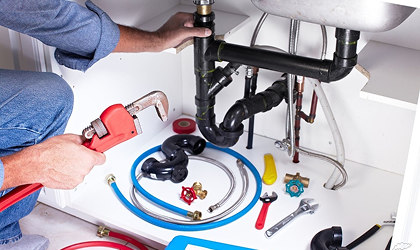
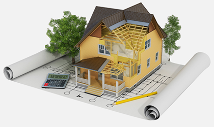

Ибранное
Статьи по ремонту и отделочным работам
Статьи по темам
Ещё категории

Хотите узнать больше
о кровельных работах?
Когда дело касается крыши вашего дома,
важно обратить внимание на ее состояние и своевременно проводить профессиональные работы
для обеспечения надежной защиты вашего жилья от непогоды и других внешних воздействий.
Наши опытные специалисты предлагают полный спектр услуг: замена поврежденных кровельных
материалов, ремонт течей, установка новых крыш, а также систем водостоков и дренажа. Мы
работаем только с качественными материалами от проверенных производителей, чтобы
обеспечить долгий срок службы вашей кровле. Наша команда гарантирует профессиональный
подход и безупречное исполнение каждой работы. Не откладывайте заботу о вашей крыше на
потом, обращайтесь к нам, и мы сделаем все, чтобы ваш дом оставался надежно защищен и
выглядел красиво на протяжении многих лет!
25.02.2023

Хотите узнать больше
о сантехнических работах?
Когда речь идет о важности комфортной и
безопасной жизни в вашем доме, сантехника играет ключевую роль. Наша компания
специализируется на предоставлении широкого спектра услуг, связанных со сантехникой,
чтобы обеспечить вашему дому эффективное водоснабжение и канализацию.
Наши опытные сантехники готовы помочь вам с установкой и заменой сантехнических
приборов, ремонтом трубопроводов и канализации, а также обслуживанием систем отопления.
Мы работаем с самыми современными материалами и технологиями, чтобы гарантировать долгий
срок службы вашей сантехнике.
25.02.2023

Хотите узнать больше о ремонте?
Процесс восстановления, исправления
или обновления чего‑либо, включая здания, помещения, оборудование или предметы бытового
использования. Ремонт может включать в себя различные виды действий
25.02.2023

Ремонт столешниц из
искусственного камня
Процесс восстановления, исправления
или обновления чего‑либо, включая здания, помещения, оборудование или предметы бытового
использования. Ремонт может включать в себя различные виды действий
25.02.2023
Вам также могут быть интересны:

Хотите узнать больше о кровельных работах?
Кровельные работы выполняются с целью обеспечения защиты
здания от атмосферных осадков, предотвращения проникновения влаги и утечек, а также
для поддержания прочности и долговечности кровли.
Статьи о кровельных работах
Найдите мастера по кровельным работам:
403 мастера в Берлине

Хотите узнать больше о сантехнических работах?
Целью сантехнических работ является обеспечение надёжной
и безопасной работы систем водоснабжения и отопления, а также эффективного удаления сточных
вод и отходов.
Статьи о сантехнических работах
Найдите мастера по ремонту сантехники:
15236 мастера в Берлине

Хотите узнать больше о ремонте?
Процесс восстановления, исправления или обновления
чего‑либо, включая здания, помещения, оборудование или предметы бытового использования.
Ремонт
может включать в себя различные виды действий
Статьи о ремонте
Найдите мастера по ремонту:
26658 мастеров в Берлине